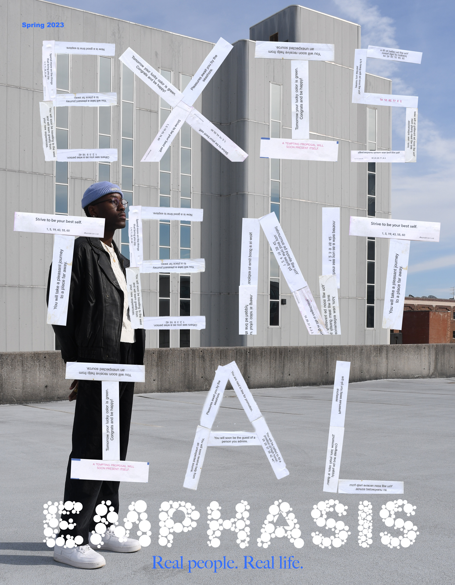

About Existential Emphasis
Existential Emphasis is a magazine that I am currently working on. The purpose behind the magazine is to show real people, real life, and to evoke real emotions. I am taking all of the photography myself and designing everything by hand. The name 'Existential Emphasis' is just to shine light on what existing means to everyone. The words on the cover are made of fortunes from fortune cookies. I took each one and scanned the whole alphabet to make a typeface. The reason I added that aspect to the cover is just to bring a light hearted effect when reading and thinking about life.
The magazine's first edition is still in the works. I have included real responses from other students about their ideas and thought on life as a whole. The whole idea come from my own struggles with anxiety. I had stuggled in the past with existential crisis. Meaning I would often question my life and existence. This would sometimes send me into a spiral of panic attacks. I am comfortable talking about this subject now because it is something that I have worked with for years. I think it is more common that what is actually talked about. So, with this magazine I hope to form a connection through whoever reads it.